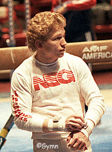

Jim Hartung (USA)
1980 and 1981 NCAA AA Champion
1984 Olympic Team Gold Medalist
3-Time US Pommel Horse Champion

|
Medal Total
Olympic Games: 1 Gold
World Championships: 1 Bronze
|
Hartung was born on June 7,
1960. A stand-out competitor even as a teenager, he led his Omaha South
High School to four consecutive state championships. Hartung won 22 NCAA
All-American awards (a record), as well as 7 individual NCAA titles. He's
been a coach of the US national men's team since 1988.
Competition Results
- 1974
Nebraska State High School Champs.: 1st PH
- 1975
- AAU Jr. Nationals: 1st AA
Nebraska State High School Champs.: 1st Team, 1st AA, 1st FX, 1st R,
1st V, 1st PB, 1st HB
- 1976
- JO Sr. Nationals: 1st AA
National High School Invitational: 8th AA
Nebraska State High School Champs.: 1st Team, 1st AA, 1st FX, 1st R,
1st V, 1st PB, 1st HB
- Olympic Development (15-18): 1st AA
- 1977
- Coca Cola International: 5th AA
JO Senior Nationals: 1st AA, 1st FX, 1st PH, 1st R, 2nd PB, 2nd HB,
3rd V
Nebraska State High School Champs.: 1st AA, 1st FX, 1st PH, 1st R, 1st
V
Sanlam Cup: 2nd AA
- USA-FRG-HUN-FRA Meet: 11th AA
- 1978
- HUN International: 3rd AA
Midwest Open: 2nd V, 3rd FX
Moscow News International: 10th AA
- National High School Championships: 1st AA
Riga International: 7th AA
- US Championships: 3rd AA, 1st PH, 1st V, 3rd R, 6th FX
- US World Trials: 3rd AA
- USA-SUI-NOR: 1st Team, 6th AA
World Championships: 39th AA (prelims)
- 1979
- Cottbus International: 2nd AA
Intl. Mixed Pairs: 11th Team
- Mardi Gras Invitational: 2nd AA
- NCAA Championships: 3rd AA, 3rd FX, 3rd R
- US Championships: 2nd AA, 2nd PH, 3rd PB, 4th R, 4th HB,
5th FX
- US Olympic Festival: 3rd AA, 1st FX, 3rd V, 3rd PB,
5th PH, 5th R
- US World Trials: 4th AA
- World Championships (Ft. Worth): 3rd Team,
9th AA, 8th V
- 1980
Caesar's Palace Invitational: 1st AA
- Chunichi Cup: 2nd AA
- NCAA Championships: 1st AA, 1st R, 2nd PB
- US Championships: 2nd AA, 1st PH, 1st R, 1st HB, 3rd FX,
5th V
- US Olympic Trials: 2nd AA
USA-FRG Dual Meet: 1st Team, 1st AA
- World Cup: 11th AA
- 1981
- Albuquerque Journal Intl. Invitational: 1st AA
- All-American Classic: 13th AA
- American Cup: 2nd AA
- Intl. Mixed Pairs: 2nd Team
- NCAA Championships: 1st AA, 1st R, 1st PB, 2nd FX, 2nd
HB, 3rd PH
- US World Trials: 1st AA
- USA-CHN Dual Meet: 2nd AA
- USA-FRG Dual Meet: 1st AA
- World Championships: 15th AA, 7th V
- 1982
- Caesar's Palace Invitational: 3rd AA
- DTB Cup: 5th AA
Intl. Mixed Pairs: 3rd Team
- NCAA Championships: 2nd AA, 1st R
Nebraska-Japan-Burevestnik Collegiate Meet: 1st AA
- Pasadena National Invitational: 1st AA
- US Championships: 3rd AA, 1st FX, 1st PH, 1st R, 1st V,
5th PB
- USGF Intl. Invitational: 2nd AA, 2nd R, 4th PH, 4th V,
4th PB, 4th HB
USGF Men's Team Tournament: 1st AA
- World Cup: 10th AA, 5th V, 6th FX, 7th V, 7th PB
- 1983
Caesar's Palace Invitational: 10th AA
Emerald Empire Cup: 5th AA
Intl. Mixed Pairs: 8th Team
University Games: 4th AA
- US Championshipss: 3rd AA, 2nd R, 5th V, 5th PB
- US World Trials: 3rd AA
USA-USSR Dual Meet: 2nd Team, 10th AA, 3rd R
1984
American Cup: 2nd AA
Emerald Empire Cup: 1st AA, 1st FX, 1st V, 1st PB, 2nd PH, 2nd R
Intl. Mixed Pairs: 1st Team
Olympics: 1st Team, 6th V
US Olympic Trials: 4th AA
US Championships: 3rd AA, 3rd PH, 4th R
USA-CHN Dual Meet: 6th AA
This page was created on February 13, 2000 and was
last updated on August 27, 2007
.
© Gymn Forum